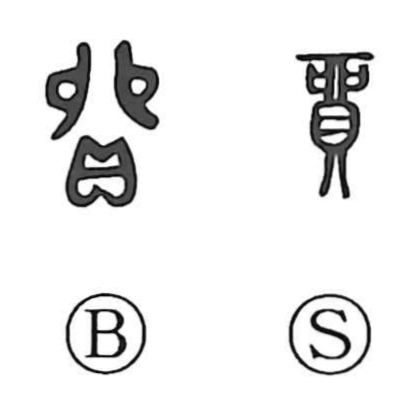

貿

Kun: kaeru, akinau | On: bou
trade ・ exchange ・ barter
Explanation
貿 is a phono-semantic character that combines 貝, the cowry shell used in antiquity as money, with 卯 as the phonetic. In early forms 卯 depicts the sacrificial meat cut into two, conveying the idea of splitting and, by extension, exchanging counterparts. Set alongside 貝, which points to valuables and currency, the character comes to mean exchanging by means of money—buying, selling, and bartering—as seen in compounds like 貿易. Classical usage, such as the Lüshi Chunqiu line 男女貿功以長生, shows 貿 in the sense of exchanging one’s tasks or work in order to sustain life.